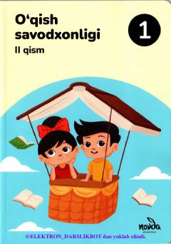

OS1-sinf o'quvchilari uchun o'qish savodxonligi fanidan o'quv qo'llanma.
Ushbu darslik umumiy o'rta ta'lim maktablarining 1-sinf o'quvchilari uchun mo'ljallangan o'qish savodxonligi fanining ikkinchi qismidir. Kitobda o'quvchilarning savodxonlik ko'nikmalarini rivojlantirishga qaratilgan matnlar, topshiriqlar va ma'naviy-axloqiy tarbiyaviy mavzular o'rin olgan.